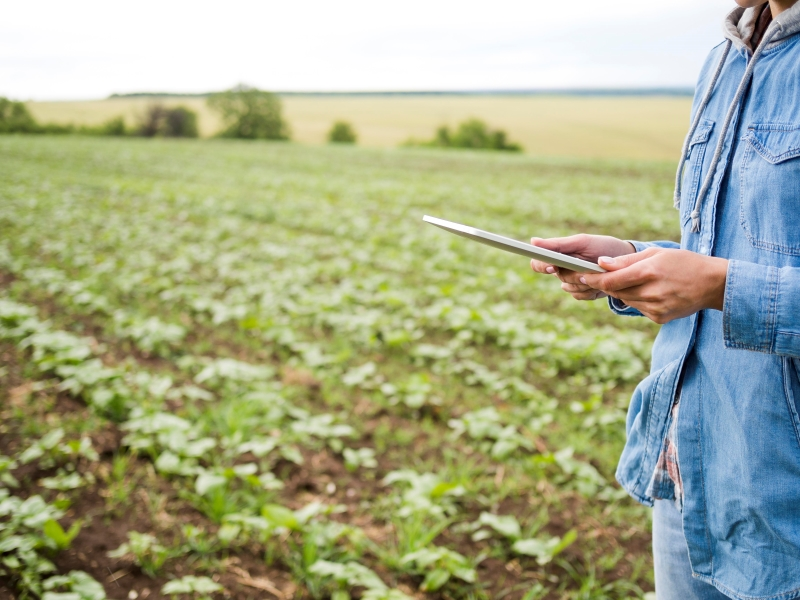

Avanços tecnológicos na agricultura
 Imagem de freepikOs recentes avanços tecnológicos estão contribuindo para a transformação do setor agrícola no Brasil, tornando-o mais competitivo, sustentável e alinhado com as demandas globais por alimentos seguros e de alta qualidade. Abaixo falaremos mais sobre cada avanço em especifico.
Agricultura de Precisão
A agricultura de precisão utiliza tecnologias como GPS, sensores e drones para monitorar e gerenciar as variáveis agrícolas com maior precisão. Isso permite o uso eficiente de insumos, como água, fertilizantes e defensivos agrícolas, resultando em maior produtividade e menor impacto ambiental.
Internet das Coisas (IoT)
Dispositivos IoT são usados para coletar dados em tempo real sobre condições do solo, clima, crescimento das plantas e saúde dos animais. Esses dados são analisados para tomar decisões mais informadas e precisas, aumentando a eficiência operacional.
Biotecnologia
A biotecnologia tem sido fundamental para o desenvolvimento de culturas geneticamente modificadas, resistentes a pragas, doenças e condições climáticas adversas. Isso tem contribuído para aumentar a produtividade e reduzir a dependência de pesticidas e herbicidas.
Robótica e Automação
Máquinas autônomas e robôs estão sendo cada vez mais utilizados na agricultura brasileira. Tratores autônomos, plantadeiras e colheitadeiras estão revolucionando a forma como as atividades agrícolas são realizadas, proporcionando maior precisão e redução de custos.
Big Data e Inteligência Artificial (IA)
O uso de Big Data e IA está transformando a tomada de decisões na agricultura. Plataformas de análise de dados ajudam a prever padrões climáticos, doenças de plantas e demandas de mercado, permitindo que os agricultores planejem e ajustem suas operações de maneira mais eficiente.
Sistemas de Irrigação Inteligente
A tecnologia de irrigação inteligente utiliza sensores e algoritmos para otimizar o uso da água nas lavouras. Esses sistemas garantem que as plantas recebam a quantidade certa de água no momento certo, economizando recursos hídricos e aumentando a produtividade.
Marketplace e Comércio Digital
Plataformas digitais estão facilitando o comércio de produtos agrícolas, conectando diretamente agricultores a consumidores e mercados. Isso elimina intermediários, aumenta a transparência dos preços e melhora a rentabilidade dos produtores.
Tecnologia de Blockchain
O blockchain está sendo utilizado para rastrear a origem e o percurso dos produtos agrícolas, aumentando a transparência e a segurança alimentar. Isso também ajuda a construir a confiança do consumidor nos produtos agrícolas brasileiros.